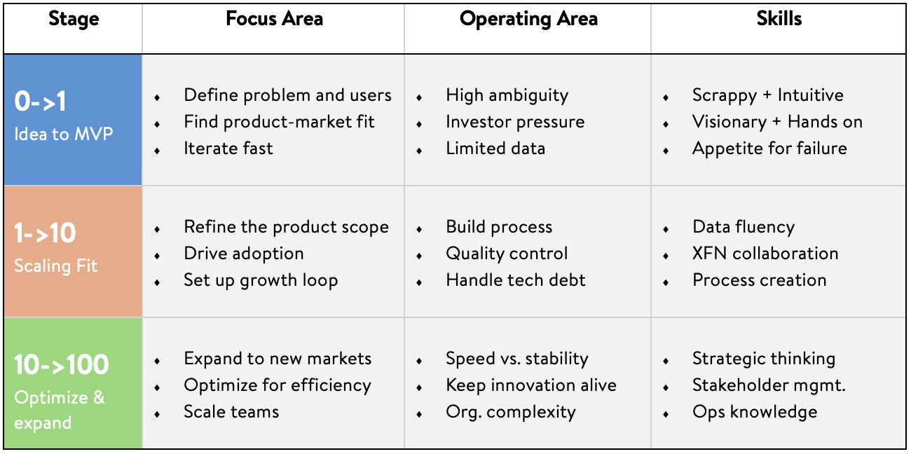

A practical way to understand what changes across product stages, and where you might thrive.
I get this question a lot from PMs who come across my profile. Most people assume product management is the same at every stage, and job descriptions do not help. In reality, what you focus on and what you struggle with changes dramatically depending on where the product is in its lifecycle.

In 0 to 1, your job is to make the problem real. Define users, test assumptions, and iterate fast. You will not have perfect data. You will have signals.
In 1 to 10, you turn early fit into repeatability. You build processes, improve quality, and create the growth loop that makes outcomes predictable.
In 10 to 100, you scale the machine. The tension becomes speed versus stability. You keep innovation alive while navigating org complexity.
There is no best stage. There is the stage that matches how you work.
I started closer to 10 to 100 to build ownership and operating muscle, moved into 1 to 10 to refine product craft, and now I lead 0 to 1 because I genuinely thrive in ambiguity.